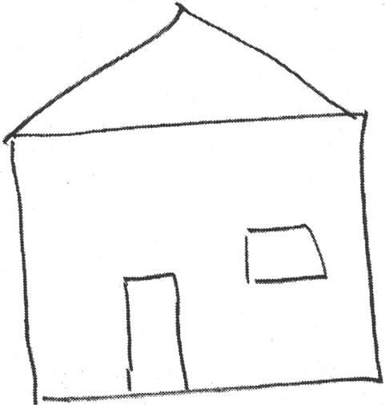
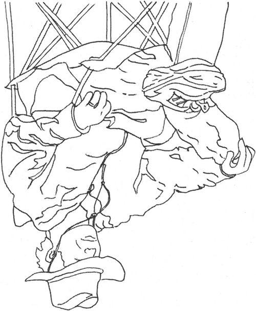
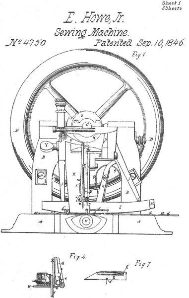
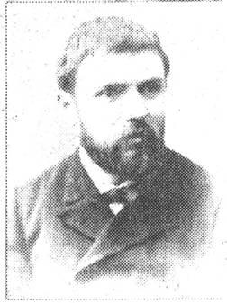
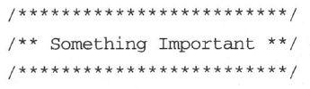
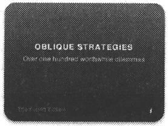
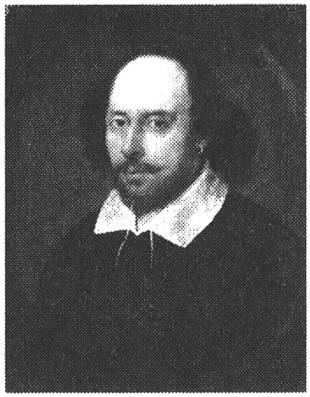

第4章 利用右脑
人应该努力学习洞察和培养自己内心深处的灵光一现，这远远胜于外面流光溢彩的整个世界。然而，人总会下意识地抛弃自己特有的想法，仅仅因为那是他自己的想法。
——拉尔夫·瓦尔多·爱默生（1803—1882），美国散文家、思想家、诗人
在本章，我们将研究一整套提高大脑处理能力的技术。其中有一些你可能非常熟悉，另外一些肯定特别陌生，请不要逃避那些“奇怪”的技术。如果你感到惧怕，不想尝试某些东西，那么这些恰恰就是你应该首先尝试的。
上面引用的爱默生的话指出，我们容易忽略不寻常的或者感觉不舒服的想法，而这恰恰是很糟糕的事情。你丢弃的可能是一生中最有价值的想法。因此，你需要重视头脑中的所有想法。当然，有些想法可能会像《盖里甘的岛》〔1〕的剧情一样异想天开，但是不排除你也可能会找到一个能够改变世界的想法。因此，我们将全面研究一下，不论这些想法是好的、坏的还是丑陋的。
你可能知道L型处理是什么样的。正是你大脑中的这种感觉使L型非常受关注。但是R型是什么样的呢？你将会做一个练习，体验一下到R型的认知转换，我们会了解多种方式来利用R型处理。
我们还会研究如何更有效地结合L型和R型，并且会向你展示一系列技术帮助你发挥R型的潜能。
4.1 启动感观输入
要投入更多脑物质去解决问题和发挥创造力，最简便的方式就是激活更多的神经通路。
这意味着扩大感观参与范围——使用与平常不同的感观。不要小看这种作用，研究显示，使用多感观技术可以让学生的学习效果提高5倍〔2〕。即使是特别简单的工作也能受益。
例如，困在一个乏味的电话会议或者思考一个棘手的问题时，试着把玩一下回形针或者做某些触觉游戏就能缓解疲劳。
诀窍12
增加感观体验以促进大脑的使用。
我见过开发团队通过增强触觉获得成功。他们不是通过商业工具（比如UML或者类似的东西）直接创建和记录设计或者架构信息，而是使用积木，颜色各异的玩具积木或者乐高积木。
使用乐高积木做面向对象设计对团队成员来说非常有效：每个人都可以参与，而无需争夺键盘或者白板笔，大家的举止行为更富有活力，还促进了多感观参与。它帮助你把有关系统的各项工作形象化，还激发了想象力。CRC卡片〔3〕也同样具有很好的多感官触觉效果。
利用多感观反馈。
Use cross-sensory feedback.
接下来重点看看多感官的反馈。增加一种感官是良好的第一步，现在再来增加多个感官并允许它们交互。假设你要设计并做以下几件事情。
□ 使用通常的表单写下设计。
□ 画一幅图画（不是UML或者正式的图片，只是一幅图画）。可以使用哪些可视化的隐喻？
□ 使用语言描述它。
□ 与小组同事作公开讨论，回应问题和批评，等等。
□ 扮演各种角色。（想起什么隐喻了吗？我们会很快详细讨论隐喻。）
最后一点非常有效，在4.2节有些真实示例。
注意，这些活动用到了其他的感官和交互方式。当你动用一个其他的输入模式，你就可以激活大脑的更多区域，也就启用了更多的处理能力。
小学教育工作者很早就知道，多感官的反馈是增强理解和记忆非常有效的方法。这是一项相当成熟的教学技术。这可能就是为什么你读小学时曾被强迫制作丑陋的古罗马透视画或者庞贝〔4〕的纸质塑像。
刺激你的大脑。
Feed your brain.
大脑总是渴望接受这种额外的、新奇的刺激。大脑擅于持续适应变化的环境。因此，要定期改变环境，满足你的大脑。任何一种感官的参与都可能是有益的，你可以牵着狗漫步在沙沙作响的树叶上，打开窗户感受一下今天的天气（事实上是呼吸一下新鲜的空气），或者只是走进休息室、健身房（那里的空气可能稍差，不过锻炼对提高大脑性能同样非常有用）。
4.2 用右脑画画
我已经说了很多次，我们没有充分利用自己的R型能力。好了，我们要做一个小实验来证明这一点，看一看如何有意进入纯R型认知状态。
我在欧美各地做过很多次演讲，演讲内容大多汇入了本书。演讲中我最喜欢的一个环节就是，我会询问听众一个非常简单的调查问题：告诉我你的绘画水平。结果总是一样的。
在一群100名技术人员（程序员、测试人员和经理）的听众中，可能有一两个人会说绘画非常好，可能另外5～8个人表示画得还凑合但不能算精通。任何情况下绝大多数人都符合我的判断：我们画得很差，只是鬼画符。这是有原因的。
绘画即是观察。
"Drawing" is really about seeing.
绘画是一种R型活动。让我们花一点时间来解释一下我所说的绘画的意思。绘画真的不是在纸上做标记。任何一个具有正常行动能力的人都可以按照绘图和素描的要求在纸上做合适的标记。困难的部分不是绘画的结果，而是观察。这种可视的洞察力是一项R型任务。
这个问题的关键是共享总线，我前面为你介绍过（见第3章）。如果L型占用了这条总线，就会阻碍R型干活。有趣的是，很多常见的休闲活动都能够激活R型并停止L型的占用：听音乐、绘画、静思、慢跑、针线活、攀岩，等等。
为了访问R型，必须给大脑分配一个会被语言性、分析性的L型拒绝的工作。或者正如杰尔·利维〔5〕（加州理工学院罗杰·斯佩里博士的杰出学生）说的，你需要“创造条件让大脑转移到其他的信息处理模式上——意识的细微转变，帮助你更好地观察发现”。
限制认知干扰。
Limit cognitive interference.
在20世纪70年代末，艺术教师贝蒂·艾德华博士〔6〕写了一部杰出的著作——《用右脑绘画》。这很快成为教授我们这些新手绘画的流行技术。艾德华扩展了斯佩里博士的工作，她认识到很多人绘画困难的原因是受到占主导地位的L型的认知干扰。
L型是符号机器，可以为一些感官输入快速提供符号化表示。这对于阅读和写作这样的符号性活动很好，但对其他活动就不合适了。
角色扮演
乔安娜·罗斯曼〔7〕描述了她利用角色扮演解决一些设计问题的经历。
“这个团队当时正在进行一个项目以挽救公司。他们准备采用一种新的方式来处理排队请求进入系统。我建议为每个人分配一个角色。日程控制者拿着一个哨子，请求者站在合适的队列里，管理者告诉请求者该往哪里走，等等。
“一些人觉得这有些愚蠢，但是每个人都累了，想要做些改变。我们自己对角色做了标记。我拿着秒表计时，同时用纸板记录信息。然后我们就开始了。
“开始，一些人互相撞到了一起（他们脸上的表情太好玩了）。接着我们对设计做了更改。重新分配角色，通过了一些常见的场景。每当我们准备好一个场景都会意识到会有另外一个时间问题。
“这次活动足够让人们认识到，把30～60分钟时间花在角色扮演上要比花在设计复审会议更有价值。
“角色扮演设计不是公开讨论，而是用实际行动参与和观察设计。”
琳达·莱辛描述了扮演的另一个用途：培训团队。在向团队介绍一种新框架的数次糟糕经历之后，她和同事大卫·得拉诺决定在下一个团队中用表演来模拟框架。这次，开发人员们不再抱怨没有听明白，而是抱怨表演简直浪费时间，因为演出的内容简直是“太简单了！”
喔，这都是因为角色扮演真的有效果。
我们来做一个快速测验。请拿出一张纸和一支笔，在5秒钟之内，画出你的房子。
用5秒钟，试试这个……
我猜你画的东西类似于图4-1。现在实话告诉我，你的房子真的是这样子吗？除非你住在二维国〔8〕，否则这决不是你房子的确切样子。是那个曾经有用的L型思维跳出来尖叫道：“房子！我知道！就是一个盒子，顶上有个三角形。”

图4-1 这是你的房子吗
这不是你的房子，就像是你简笔画的人形不是你一样。这是一个符号，表示真实事物的简易速记。但是，很多时候你不需要这种陈旧的符号，你需要的是洞察真实的事物，比如在绘画，或者访谈用户收集其需求时。
认知转变，感受R型
艾德华博士首先提出，要想获得真实的洞察力，你需要关闭L型，启动R型做其最合适的工作。为了达到这个目标，她推荐了下面的这个实验，帮助你经历一次认知转变。
该实验将告诉你R型是什么样子的，只有4条规则。
1．保持30～40分钟的安静，不受干扰。
2．复制图4-2中的画像。
3．不要把书倒过来看。
4．不要说出你识别出来的任何部分，只是心中想着向上、向下，这条线往这边拐一点，等等。

图4-2 画这幅图
你不能说出你观察总结出的任何特征，这一点非常重要。要只关注线条和它们之间的关系。
做完之后，把图片转过来，你可能会非常惊讶这个结果。
在继续阅读之前，先把这个练习做完……
为什么这样做效果还真不错？
因为你分配给L型一个它不想要的工作。通过持续地拒绝说出你观察出的结论，L型最终放弃了。这不是它能够处理的任务，所以它让路给R型处理这件事情，而这正是你想要的。
这就是《用右脑绘画》的观点，针对不同的工作使用正确的工具。
实验中，你感觉怎么样？觉得有什么不同吗？你有没有感觉到忘记了时间而沉浸其中？画画的结果是不是比你平时只是复制它要更好？
如果不是，不要气馁。你可能需要尝试多次才会成功。一旦你经历了这种认知转换，就会更好地理解纯粹的R型处理是什么样子的，假以时日会更加容易上手。
4.3 促成R型到L型的转换
尽管我一直在吹捧R型的优点，但这并不是我的全部意图。几年之前有大量的自助类书籍，宣扬了基于右脑的所有优点。我记得甚至还有一本Right Brain Cookbook〔9〕。
当然，那都是些胡说八道，甚至可以算脑残，是没有意义的。
虽然我们可以利用历来忽略的R型处理，但它不是银弹或灵丹妙药。单凭它自己无法解决所有问题，毕竟它不能处理语言。
我们需要的是更好地同步L型和R型，保证整个大脑可以工作得更好及更有效率。
有一项特别的技术让你实现这一点，我是很偶然发现它的。确切地说，我不是路上巧遇它，而是攀岩时才发现的〔10〕。
4.3.1 去攀岩吧
曾经有段时间，我的妻子觉得攀岩比较有趣。很多参与者都觉得没把握——我们以前从没尝试过这个，但是大家都决心一试身手。
在现场，教练走过来，确保所有人都系好了安全带。我们都全副武装地接受检查，检查完毕之后，他走到人群的前面，我们屏住呼吸，准备聆听教诲。
但是，根本就没有什么教诲。他只是告诉我们现在开始攀爬（大体如此）。30分钟后我们再回来集合。人群中有人在嘀咕——我们为学习攀岩付了昂贵的学费，教练只是不管不顾，把我们扔给了狼群〔11〕（对于我们则是扔给了岩石）。教练扬长而去，去喝咖啡了。
因此，我们在岩石上胡乱爬了一会，事实上都不知道自己在干什么。半小时之后，教练出现了，开始讲课，告诉我们如何攀岩。现在，因为我们已经有了一些经验（虽然短暂），所以他的讲解更加有意义。我们可以明白他的指令所针对的一些情境：当他提到通过某种方式转移身体重心，我们明白其用意。这比他一开始直接讲课要清楚得多。
事实上，回想一下，教练的确做得对：他为我们提供了一个探索攀岩运动的安全环境（请注意，他首先确保所有的安全带都系好）。首先让我们经历了多感官的、亲身实践的情境，帮助我们有了初步了解。然后，他再进行一次传统的、充满针对性的授课。
他做的事情就是建立了一种从R型到L型的转换。事实上，这正是你可以用来促进学习的方式。
建立R型到L型的转换。
Engage an R-mode to L mode flow.
4.3.2 罗扎诺夫教学法
在20世纪70年代末，保加利亚心理学家乔治·罗扎诺夫开展了一项实验，他称之为“暗示学习法”〔12〕。实验想法是创建一个学习环境有助于R型到L型的转换。他当时的实验主要针对的是外语培训。
罗扎诺夫教授把他的学生带到一个漆黑的房间里，播放着轻曼的巴洛克音乐作为背景音乐（因为当时是20世纪70年代，所以不存在背景音乐侵权的问题）。在放松、舒适的环境中，通过使用瑜伽呼吸法和有节奏的练习，他希望可以提高学生专注和吸收新事物的能力。
当学生进入状态后，罗扎诺夫教授连珠炮似地用外语例子对他们狂轰滥炸。没有说教，没有注脚，没有解释，只是展示。另外一组学生则接受更传统的教学方法。
实验效果非常好，接受这种密集教学法的学生比参加传统课程的学生表现更出色。从那时起，很多教育者意识到要利用R型的获取能力〔13〕。
新技术总是让人兴奋，而有些人会太极端，以致于强调纯R型技术而完全忽略了L型。有一些赶时髦的书过于推崇右脑模式及其他千奇百怪、颇欠考虑的想法。
这就成了捡了芝麻丢了西瓜。你不能忽略思维模式的任何一面：你需要两者协调一致。你需要让R型打头阵，然后转到L型去“生产”出来。
诀窍13
R型开路，L型紧跟。
思维的两种方式天生就是一起工作的。例如，首先运用类比方法来解决关联性、理论性的问题，然后运用分析法来验证你的想法。不过请记住，这不是单向旅途，你需要回到R型以保持思维的流畅。R型是源头，你要给它自由、无限的空间。
4.3.3 酒醉写作，酒醒修改
有一位老作家曾经给想要成为作家的人说过一句格言：“酒醉写作，酒醒修改。”在你置办培根特醇银龙舌兰酒或吉尼斯黑啤酒想要酒醉之前，先让我们来看看这句话到底是什么意思。
你希望拥有自由的创造空间，不受“常识”或者“实用”束缚。你会有充裕的时间去尽情发挥自己的创造力或随后抛掉那些荒诞的东西，不过首先，你需要顺其自然。
如果想法过早地受到束缚，那么创造力就会被扼杀。与此类似，如果你还没有全局的概念就试图记忆细节，那么学习就会陷入僵局。
不要太着急。解决问题时，学会轻松面对不确定的事情。进行创造时，坦然面对荒谬和不切实际的东西。学习过程中，不要太迫于学会和记忆，首先只是适应它。试着先理解其意思，掌握主旨思想。
然后再采取传统的L型活动走到下一步：从R型到L型的转换。
先适应它。
Get used to it.
教育界按照相同的思路往前迈进了一小步。大卫·格林博士是旧金山加利福尼亚大学朗利·波特精神病研究所的著名研究人员，他认为，为了学生的全面发展，当今的教师肩负三种主要职责〔14〕。
□ 训练两个脑半球，不仅仅是语言性的、符号性的、逻辑性的左脑（传统的），也包括空间性的、关系性的、综合性的右脑。
□ 训练学生学会选择适合当前任务的认知方式。
□ 训练学生综合利用两种模式解决问题。
较差的草稿初案
坦然面对不确定意味着坦然面对一些不完整、未完成的事物。你应该避免追求完美的冲动想法。美国作家安妮·拉莫特倡导有意识地创建较差的草稿初案。也就是说，完成较差的草稿初案胜于永远也完不成的完美初稿。在她的Bird by Bird: Some Instructions on Writing andLife一书中，拉莫特解释了完美主义的危害：
“完美主义是压迫者的声音，是人们的敌人。它会束缚你的想法，毁掉你的生命，同时它也会妨碍你创建较差的草稿初案。我认为完美主义基于一种强迫性的想法：如果你足够细致，每件事情都做得很好，那你就不会失败。但事实是，无论怎么做你都有可能会失败，可是很多人即使不太仔细也会做得比你好，而且其间也会拥有更多欢乐。”
你对自己也负有相同的责任。你需要最终协调地、有效地利用L型和R型。
但是相比一般人来说，我们这些自诩受到良好教育的、白领的技术专才有明显的劣势。我们已经高度集中并受益于L型思维学习方式，不知不觉忽略了R型。我们需要尊重、遵从、培养对于R型的注意力。
让我们来看一看让L型和R型协调工作的其他几种方式。
4.3.4 结对编程
一种使L型和R型协同工作的有趣方式是让另一个人使用另一类型。也就是说，让你的L型和别人的R型一起工作，或者是反过来。
工作时，一人用L型，另一人用R型。
Work with one person in L-mode, one in R-mode.
极限编程提倡的一个颇为有效且有争议的实践就是结对编程。在结对编程里，两位程序员工作在同一个键盘和显示器前。通常，一位在IDE中编写代码（驾驶员），同时另一位（领航员）坐在后面，提出建议和意见，给他出点子。
这样工作效果好的一个原因是，驾驶员锁定在语言模式下，关注一定的细节，领航员则自由运用更多非语言性的区域。这是一种使用两个人来实现R型和L型共同工作的方法。读者Dierk Koening〔15〕这样描述这种经历：
“当结对编程时，我经常感觉到导航员能够进入‘模式匹配’模式，而驾驶员则不行。有时这会引起分歧。导航员说：‘这里的所有代码和那边的代码完全一样，我是说——除了这些字……’驾驶员则不同意，因为他在驾驶时看不到这些。”
领航员自由地观察这些较大的关系和整体。大多数时间，你在驾驶时无法看到这些关系。因此，如果你没有结对编程，你肯定需要经常停下，暂时离开键盘。
当你与人交谈或者在白板或纸上和别人携手工作时，你的思维往往会变得更加抽象。你就更可能发现新的抽象模式，这也正是我们所有程序员所期望的。
这种抽象意识增长的现象在对高中生的一项实验〔16〕中得到了证实。这些学生要求解决如下问题：5个咬合的齿轮在桌子上水平一字排开，就像是一排时钟。如果你把最左边的齿轮以顺时针转动，那么最右边的齿轮如何转动？
要求一些学生独立解决这个问题，而另一些人则结对解决，同时研究人员逐步地增加齿轮的数量。当齿轮数达到131个时，很容易看出谁已经发现了其中的抽象模式（在本例中，是著名的计算机科学的对等定则），谁没看出来。只有14％的独立解题者发现了这一规则，但是高达58％的结对者发现了。
在另一项实验中，一对学生在一个非常具体的问题陈述的基础上，提出了一个抽象矩阵表示法。研究人员是这样记载的：
……实验者询问他们是如何提出这个矩阵的。其中一人说：“他想用列，而我想用行。”为了协调在这个问题上的两种观点，他们想办法提出了这个包含了行和列的矩阵模型。
——施瓦茨等人
要想发现有用且有趣的抽象特征，相互配合是一种经得起考验、行之有效的方法。
4.3.5 隐喻相通
正如我们所看到的，L型和R型处理过程截然不同，但是在你的大脑中它们存在一个会合之处——一个创造力转化为新创意的地方。L型和R型在隐喻上（也就是创建类比的过程中）相通。
“隐喻，语言和意象共同的地基，是在左右脑半球之间，在潜意识和意识之间来回游弋的途径。”〔17〕
隐喻是一种激发创造力的强大技术。
诀窍14
使用隐喻作为L型和R型相融之所。
现在，听到隐喻和类比，你可能会回想起小学时可怕的语文课。但是事实上，我们一直在使用隐喻。我们在计算机屏幕上所说的窗户（window）并不是真正的窗户。鼠标（mouse）也不是真的老鼠。硬盘上的文件夹（folder）也不是真的，回收站（trash）也不是真的垃圾桶。
当你使用线程（thread）编写并发程序时，你不是在做针线活。这只是一个隐喻。更别说Unix上的僵尸进程（zombie process）或字体排印上的寡妇（widow）和孤儿（orphan）了。
我们总是使用隐喻。事实上，认知语言学家乔治·莱考夫〔18〕认为如果不使用隐喻我们甚至不能思考。（Women, Fire, and Dangerous Things: What Categories Reveal About the Mind [Lak87]）大多数人不是特别善于处理抽象概念。使用隐喻把抽象的概念与一些具体的、日常可见的事物联系起来，就更容易让人们理解它。
但是隐喻有不同的能力。一般情况下，日常的隐喻更像是L型的符号表述。另一方面，更高级的隐喻则更强大，它们能够改变我们的思维并激发我们找到答案。是什么引起了这种不同呢？
4.3.6 并列参照系
隐喻（metaphor）源自希腊语metaphora，意思是“转移”，表示你正在以一种事实上不可能的方式把一个事物的属性转移到另一个事物上。
这种结合不相容的两种方法的概念也正是匈牙利英籍作家、哲学家亚瑟·库斯勒对创造性的定义。〔19〕在他的模型中，一些特殊的主题域形成一个参照系。从一个自完备的参照系到另一个不同的、意想不到的、不相容的参照系的突然切换是一个强大隐喻的基础。这两种体系的连接点称为异类联想（bisociation）。
当异类联想时，这种联系越不可能（两参照系相距越远），创造性的成果就越大。这种观点是爱德华·德·博诺〔20〕提出的Po技术〔21〕的基础。，〔22〕Po是一个自造词汇，超越了“是”或者“否”的二元概念。若干技术采用了Po，现在，你可以认为它是假设（suppose）的一种超强版本。
Po技术之一就是随机并列。你从你的主题域里挑选一个词，然后把它与一个完全随机、无关的词结合起来。举例来说，看看词语香烟和交通灯。现在的挑战就是把这两个完全不相关的概念通过异类联想联系到一起。例如，香烟和交通灯可以引出这样一个概念：在香烟上使用红色标志区来作为帮助戒烟的提示。
使用随机并列来创建隐喻。
Use random juxtaposition to create metaphor.
两个想法差距越远，越难以通过有效的隐喻联系起来。当我们遇到一个格外具有创造性的隐喻且两参照系距离适中，我们就不得不几百年以来一直都颂扬这位作者：
轻声！那边窗子里亮起来的是什么光？那就是东方，朱丽叶就是太阳！
爱情是叹息吹起的一阵烟。
哲学是逆境中的蜜乳。
——威廉·莎士比亚
窗子里的明亮之光是什么？它不是天体，是罗密欧在化装舞会上遇见的女孩。〔23〕爱是一种情感，与字面意义的烟、烟雾或叹息无关，但那将会在脑海中显现多么奇妙的景象啊。你几乎可以看见，小情人们那不可抑制的渴望，像丝丝烟雾一点点汇聚成浓重的云团和雾霭。
烟雾的参照系特征与情感（爱情）的参照系特征联系到一起，把很多已知但未明说的特征施加到情感参考系上。这种从一种参考系到另一种参考系的移植非常强大，我们完全可以加以利用。
这是文学作品中的隐喻，我们的工作中同样也有隐喻。
4.3.7 系统隐喻
极限编程（见Extreme Programming Explained: Embrace Change [Bec00]）的最初发行版中提倡一种有趣的实践：系统隐喻。也就是说，任何软件系统应该能够通过一种适当的隐喻来描述。举例来说，薪酬系统可能被类比成一个邮局，有分布的邮箱、交付时间表等。而一个科学测量系统可能被看做是一个制造系统，有传送带、储存桶等。
虽然所有的隐喻最终都会瓦解，但是在这之前我们抱有的想法应该是，一个足够丰富的隐喻有助于指导系统的设计和解决开发过程中出现的问题（这种想法类似于我们在《程序员修炼之道》[HT00]中对系统不变量的讨论）。
隐喻参考系的特征能够印到软件系统，真实世界中隐含的、容易理解的属性逐渐转移到软件本身。
但是，提出一个好的隐喻——能够帮助解决问题而不是产生更多问题——可能是非常困难的。同测试先行、结对编程等广受欢迎的开发方式相比，系统隐喻作为一种实践并未得到广泛应用。
我曾经与极限编程之父Kent Beck笼统探讨过隐喻，他说：
“隐喻思维是编程的基础，因为它存在于所有的抽象思维中。如果我们没有意识到隐喻，就可能误入歧途。而混淆隐喻会削弱其自身的能力。为什么要在子类中覆盖方法？（Why do we override a method in a subclass?）清晰的隐喻使代码更易于学习、理解和扩展。”
清晰的隐喻是一种强大的工具，但是我们总是不能正确把握它。Kent接着说：“为什么我们会用错隐喻？为什么add（）相对的函数并不总是delete（）？为什么我们向容器中insert（）东西而不是add（）？程序员们对隐喻的使用并不认真——表单（table）根本不像表单，线程（thread）不像线程，存储单元（memory cell）既不像存储也不像单元。”
我们使用了如此多的隐喻，很多我们都没有察觉到（如窗口、鼠标，等等）。不假思索地提出第一个隐喻是非常容易的，但是这往往不是你能用的最好的隐喻。
提出衍生式隐喻是很困难的。
Generative metaphors are hard.
提出一个非常好的具有衍生式属性且适合情境的隐喻非常困难。没有“隐喻编译器”告诉你它正确与否，你不得不在实践中尝试。使用该隐喻指导你的设计，记住它是如何帮助你的，或者如何不起作用。你不会立刻知道答案，结果是不确定的。正如我们在4.3节所说的，你需要坦然面对不确定性。不要强迫自己立即做决定，做到心中有数就好。
在经历一些实践之后，你可能突然意识到你最初使用的这个隐喻是错误的，另一种想法实际上更适合（这当然很好，只需要做一些代码重构）。
如果不习惯于主动创建隐喻，你可能会发现实践一个系统级别的隐喻很困难〔24〕。但是有一种足够有趣的方法可以提高你创建隐喻、类比的能力。
4.3.8 讲个笑话吧
幽默既不是浪费时间，也不是无害的消遣，而是反映了思维、学习和创造所必需的重要能力。它与联系有关。
幽默产生于在不同的想法中制造新奇的联系。这听上去可能有些荒唐，不过幽默往往就建立在识别关系并扭曲关系的基础之上。例如，“我最好的朋友带着我老婆跑了，我真的很想念他。”你还以为主要关系是说话者和他的老婆，但事实上他与好朋友的关系是他想要强调的，这种扭曲的联系就显得很有趣。
Take my wife.
来自于汉尼·杨曼〔25〕的经典名句：“Take my wife. Please.”起初，你可能认为“take my wife”只是一个惯用语，意思是“例如，考虑一下我妻子的感受”。可后来你才意识到这是一个悲伤的请求〔26〕。语锋陡转正是幽默的来源。创造力来自于你意识到“take my wife”具有多重含义并利用这种潜在的可能性来制造误解。
众所周知，喜剧演员史蒂夫·赖特经常会打一些生动有趣的比方，例如，他说他的朋友，一位电台播音员，在开车经过一座大桥下时就会消失。其实，赖特是作了一个类比，既然电台信号在大桥下可能消失，那么电台播音员也可能会这样消失。他还说曾经偶然用车钥匙开家门，开着公寓在大街上兜风。
除了作类比，你还可以超常扩展一个已然存在的想法。举例来说，如果飞机的黑匣子能够幸免于难，那为什么不能让整架飞机安全无恙？
在任何情况下，幽默的能力都来自于发掘或扩展常规之外的关系，真正突破思维界限。急智——能够发现无关事物的联系或者扩展思维突破其界限——是一种值得在团队中实践、锻炼和提倡的技能。
诀窍15
培养幽默感以建立更强大的隐喻。
Have you seen my fishbowl？（你看到我的鱼缸了吗？）隐含的、习惯性的参考系会让你认为我在寻找鱼缸。但是，如果回答是：“是的，它刚打了个好球。”那么这么来看，我们就处在一种完全不同的卡通参考系中，bowl被变成了一个动词〔27〕。
通过练习制造这种广泛的联系，你会更精于此。事实上，你会逐渐改变大脑的结构来适应这种新活动。
4.3.9 实践单元
□ 创造更多的隐喻。你可以将其作为软件设计的一部分或者更艺术性的东西——自己编笑话、故事或歌曲。
□ 如果你在创造隐喻方面是新手，从简单入手，翻翻同义词词典（就是书店里摆放在词典旁边的大厚书或者在线词典程序的“其他”窗口）。
□ 要想更深入地研究，尝试WordNet（适用于所有平台，见http://wordnet.princeton.edu）。它会提供同义词、反义词、抽象词、具体词和其他各种衍生词。
4.4 收获R型线索
尽管R型被忽略了很多年，但是它依然在努力工作，在背后勤勤恳恳地匹配各种事实，建立广泛的关联，从乏味的记忆泥淖中获取遗忘已久的重要数据。
事实上，对于你正在为之犯愁、最亟待解决的问题，R型模式可能早已有了准确答案。
但是，你如何才能得到它？在本章余下部分，我们将探讨有助于发掘、诱导、酝酿、培养你大脑中伟大想法的技术方法。
4.4.1 你已经知道
你可能已经拥有伟大的想法或者知道该如何解决那个极其棘手的问题。
一切输入都被存储。
Every input gets stored.
你的大脑存储着它接收到的一切输入。但是，虽然存储着，它不一定会索引这些记忆（用一个更加死板的计算机比喻：“存储一个指向它的指针”）。
正如你可以无需记忆上班的路一样（之前已经提到），同样的事情也可以发生在你听演讲时、参加培训时或者读书时，包括现在这本书。
但是，这一切都不会丢失。事实上，当你努力解决一个难题时，你的所有记忆都会被扫描——甚至是那些你无法主动唤醒的记忆。这不是最有效率的（这类似于在一个包含很多行的大表上做SQL全表扫描），但是这的确能解决问题。
你是否曾经听到电台里播放的一首老歌，然后在若干天之后突然想起歌名或者歌手？你的R型思维一直在背后异步地思考这个问题，直到最终找到相应的记忆。
但是很多时候，答案不是那么容易找到的：R型毕竟不能处理语言。它可以获取记忆块，但无法处理它，这会导致一些相当奇怪的情景。
4.4.2 伊莱亚斯·豪的奇遇
在1845年，一个名叫伊莱亚斯·豪的美国人尝试发明一种实用缝纫机（见图4-3）。进展不是非常顺利。在经过了漫长、艰苦、一无所获的一天之后，晚上他做了一个非常可怕的噩梦，在尖叫中惊醒，直冒冷汗。

图 4-3
在噩梦中，他身处非洲，被饥饿的食人族绑架。他马上就要被扔进沸水里煮死。他努力挣扎，而猎手们就一直用一种看起来非常可笑的长矛戳向他。
第二天他描述噩梦时说，他的注意力集中在“可笑的长矛”上。因为这些长矛的前端钩子上有洞，这就像是手持缝纫针上的洞，只不过后者是在末梢上。
伊莱亚斯接着获得了自动缝纫机的第一份美国专利，这要归功于他来之不易的灵感：缝纫机针的洞需要与平常的手持针方向相反。
看来伊莱亚斯已经知道了难题的答案——至少，他的R型思维早已找回了答案。但是由于R型是非语言的，如何交给L型处理呢？
许多想法是无法用语言表达的。
Many ideas are not verbalizable.
R型不得不想办法克服困难，在本例中通过可怕——而且记忆深刻的怪梦来呈现。
事实上，你有很多出色的技能和想法是无法用语言表达的。如前面所说（第3章，认识你的大脑），你能够识别数以千计的面孔，但是当你尝试去描述一张面孔——配偶的、父母的或者子女的——不论精确与否，你都无法用语言来形容它。这是因为面部识别（事实上，大部分基于模式的识别）是R型活动。
你可能还注意到你无法阅读梦中出现的文字，如道路标志或者大字标题。大多数人都不行。现在让我们赶快来看一看收获R型识别的两种不同方法：图像流和自由日记。
无声的力量
一组研究人员*做了这样一项实验。他们向学生们展示了在计算机屏幕不同象限随机闪过的一些号码。有些学生在主要号码之前会看到一个跳跃号码，不过另外一组受限的学生则看不到。表面上看，跳跃号码是随机地在不同象限上跳跃，实际上根本不是随机的——有微妙的规律。
接触到跳跃号码的学生可以更快地定位到主要号码。但是，他们无法解释快速定位的原因。他们以为自己只是运气好，是猜对的，但实际上他们已经在潜意识里了解了规律，只是无法用语言表达。
感谢June Kim提供的资料。也可参见Hare Brain, Tortoise Mind:How Intelligence Increases When You Think Less [Cla00]。
4.4.3 利用图像流
在伊莱亚斯·豪的例子中，他苦苦寻找的答案以梦的形式出现。你一旦准备更加关注自己做梦的内容，可能也会经历同样的事情。不是所有的梦都“有意义”。有时在梦里，“雪茄就是雪茄”，弗洛伊德曾经这样说过。但是很多时候，R型思维都在努力告诉你一些内心想要知道的事情。
图像流就是一种用于收获R型意象的技术〔28〕。其基本思路是有意观察心理意象，即密切关注，并在心中回想一下。
首先，找一个问题。然后，闭上眼睛，再把脚搁在桌子上（能以这种姿势工作可是超棒的），默想大约10分钟。
对于经过大脑的图像，做如下处理。
1．观察图像，努力看清所有细节。
2．大声地描述出来（真正发出声音，这很关键）。现在把脚翘在桌子上自言自语。
3．利用全部五种感观想象它（或者根据实际情况尽量运用所有感观）。
4．使用现在时态，即使该图像都溜跑了。
通过明确地把注意力集中到稍纵即逝的画面中，你对该图像使用了更多的途径并加强了联系。当努力解释这种画面时，你扩展了提供给R型思维的搜索参数，这有助于凝聚相关信息。无论如何，密切关注意识中掠过的“随机”图像，就可以开始有一些新的领悟。
这不是魔力，可能对你有效也可能无效，但是这的确是一种与大脑剩余部分交互的好办法。
很多人用这种方式可能看不到任何图像。在这种情况下，你可能需要动动手来随便引发一张图像，轻微擦拭自己的眼睛或者短暂地凝视光源（这会产生一种称为光幻视的东西——从非可视源获取光的感觉）。
图像的来源并不是那么重要，重要的是你如何解释它。稍后我们会再讨论这种现象。
4.4.4 利用自由日记
另一种利用R型潜意识能力的简单方法就是书写。
写博客在近几年受得了巨大欢迎，而这大概是理所应当的。在以前的年代，人们写信，有时还写了很多。我们保存了名人的优秀信件，例如伏尔泰、本·弗兰克林、梭罗等。
写信是一种伟大的习惯。有时内容相对枯燥——天气情况、市场价格上涨、女佣与呆男出走等等。但是偶然的哲学领悟都是存在于日常生活的点滴之间。这种自由形式的日记历史悠久，那些已经逝去的、精于这项技艺的思想者最终都被尊称为“men of letters”〔29〕，正是因为他们写了这些书信。
工具与干扰
当你尝试开始任何创造性的活动时，比如写博客、文章或者（上帝保佑）一本书，你将会遇到大量阻力。阻力的表现形式五花八门：挥之不去的自我怀疑，漫无边际的拖延，以及各式各样的问题（参见The War of Art: Break Through the Blocks and Win Your Inner CreativeBattles [Pre02]中对阻力各种表现形式的完整分类。）
尤其对于博客来说，这种工具本身就可能阻碍你写作。例如，如果你是用第三方的web服务写博客（如TypePad或者Blogspot），离线时你会写吗？或者如果灵感突现时你恰好不能上网，这会不会成为你不写下来的理由呢？如果你是用自己的博客软件写作，你花在调整软件或者设计博客上的时间是不是比创建新文章还要多？虽然没必要做反对新技术的顽固派，但将东西写在纸上确实是几千年来一直都很管用的。将想法首先捕捉到纸上，然后再输入到博客中，这样做其实更迅捷。
一旦开始写作，一定要注意坚持不懈。不要为技术问题而分心。不必担心有些话是不是还需要润色，先把它们都写下来。
那些著名的信件都是被精心保存下来的，你的呢？你有备份吗？一旦写了博文，除了Google缓存你还在其他地方存档了吗？
如今，博客担任了这种角色。虽然大部分说的是“我早上吃了什么什么”，偶尔也有代表心理状况不佳的、恶毒的粗语，但也不乏能够改变世界的敏锐领悟和思想雏形。其中一些已经做到了。
有很多方法可以记录想法，其中一些效率更高。最好的方法之一就是晨写。
4.4.5 晨写技术

我第一次听说这种技术是在一本写作教材里（参见The Artist's Way [Cam02]），因为它是作家惯用的技术。但是让我惊讶的是，现在流行的MBA项目和其他高级管理课程中也提到了这种技术。
下面就是规则。
□ 晨写是早晨要做的第一件事——在喝咖啡之前、在收听交通广播之前、在洗澡之前、在送孩子上学之前、在遛狗之前。
□ 至少写三页，手写，不需要键盘、电脑。
□ 不要审查删减你写的东西。不论是优秀的还是陈腐的，只管写下来。
□ 坚持天天写。
如果不知道自己该写什么也没关系。一位参加这种培训课程的高管曾经强烈抱怨这种练习完全是浪费时间。他抗拒式地写了三页“我不知道写什么，废话，废话”。这也不错。
因为一段时间之后，他注意到别的东西开始出现在他的晨写中。市场计划，产品方向，解决方案，创新方法。他克服了最初的抗拒，发现这是一种获取想法的有效方法。
这种方法为什么会起作用？我认为这是因为晨写让毫无防备的大脑倾倒想法。早上刚起床时，你还没有像你想的那样清醒。潜意识仍然占主角。你还没有提起所有防备，也还未适应有限的现实世界。你可以直接连通R型，至少一小会儿。
爱迪生有一种有趣的习惯，正好可以看作是对晨写的改版。他打盹时手里拿着一个装满了滚珠的杯子。他知道当他逐渐入睡时，潜意识会接手他面临的问题并提供解决办法。当他熟睡时，滚珠会掉下来，撞击声就会把他叫醒。然后他就记下脑子里面的所有事情〔30〕。
4.4.6 “自由写”技术
然后就是写博客了。任何写东西的机会都是好的练习方式。对这个话题你到底持怎样的看法呢？你到底了解多少——不仅仅是你如何想的，也包括你的理由。面向公众写作是一种阐明想法和信念的好办法。
但是从何开始呢？除非你正激情澎湃地关注某个主题，否则很难坐下来写一些东西。你或许会愿意尝试使用杰拉德·温伯格〔31〕的Fieldstone方法（参见Weinberg on Writing: The Fieldstone Method [Wei06]）〔32〕。
这种方法的名字来源于修建大卵石墙（fieldstone wall）：事先不需要计划收集特别的石头，只需要到处走走，捡一些好看的石头堆起来备用。然后当你准备造墙时，就从石头堆里挑选匹配的石头，直接安到你正在做的那部分即可。
养成一种收集思维大卵石的习惯。一旦有了积累，造墙的过程就会很容易。
这是一种好习惯，应该培养。
4.4.7 利用散步
只要方式得当，你可以通过散步获取R型思维的提示。你知道迷径（labyrinth）和迷宫（maze）的区别吗？
根据迷径协会（Labyrinth Society）〔33〕的说法，迷宫可以存在若干入口和出口，一路上提供多种选择，墙会阻碍你找到出路。它是一种智力题。
迷径不是智力题，而是一种沉思的工具。迷径提供了唯一的路径，因此无需做出选择。这样走路不仅给L型一点事情做，同时也调动了R型。
图4-4 旧金山GRACE教堂
同样地，在树林里长时间地散步，驱车沿着偏僻而笔直延伸的高速公路进行长途旅行，也可以达到一样的目的，只是迷径更小更方便。
迷径已经有数千年的历史，如今不论在教堂、医院、癌症救治中心、临终安养院，还是其他康复地方，你都可以找到它。
你是否注意到伟大的想法或者领悟可能会在最出乎意料的时候降临？可能是洗澡时，除草时，刷盘子时或者做其他一些枯燥、琐碎的工作时。
这是因为L型有点厌倦了这种常规的任务，走了神，这才得以让R型自由地展示自己的发现。但是你也不必非得清洗大量的盘子或者强迫自己除草以取得这种效果。
事实上，这就像在海滩上散步一样简单。

著名数学家庞加莱使用一种类似的方法作为解题技巧〔34〕。每当遇到一道困难、复杂的问题时，他就会把所有已知的、与此相关的东西都写在纸上（在后面的章节中我会谈到一种类似的东西，参见6.8节）。这么做可以揭露出许多问题。看着这些问题，庞加莱会立刻解决其中简单的问题。
在剩下的“难题”中，他会选择最简单的一个作为子问题，然后离开办公室出去走一走，只思考这个子问题。一旦有了灵感，马上中断散步，回去写出答案。
重复此过程直到一切问题都有了答案。庞加莱如此形容这种感觉：“想法会成堆地出现，我感觉它们一直在碰撞，最后发生结合，也就是说，产生稳定的结合。”
如果你身边没有迷径，那就在停车场或者大厅走走。但是，尽量避免在办公室里散步，因为这可能会带给你很多干扰。同事的交谈，与老板或者客户的不期而遇，最新比赛结果的讨论，或者饮水机旁的政治密谋，这些都将干扰你思考问题。
请注意，我可能在刚才几段中已经误导了你。事实上，当你准备出去进行“思维散步”时，不用做任何思考。对R型和L型的显著区别加以比较，这一点也很重要。L型是主动性的：当你集中注意力时，L型就在工作。R型则不同，你不能命令它，只能邀请它。
R型只能邀请，不能强制命令。
R-mode can be invited, not commanded.
你必须得有点心不在焉。在Laws of Form[SB72]中，数学家斯宾塞·布朗并没有把这种方法称为思考，而是简单地称作“记住需要了解的东西”。
一旦你集中目标，L型过程就会占据主角，而这不是你所期望的。相反，你需要培养一种非目标驱动的思维方式。正如庞加莱所做，把一切都写在纸上（或者编辑器中，如果你必须得这么做的话），然后不去管它。不要试图思考。记住它，如布朗所说，不要关注它。只要简单地记住它。让事实和问题自由地搅和、浸泡（我们将在8.2节讨论这一话题）。
诀窍16
离开键盘去解决难题。
当你不寄希望于它时，就会发现答案自己冒了出来。
现在把本书放在一边，出去走一走，我会等你回来……
4.5 收获模式
虽然关于如何收获伟大的想法，我们已经讨论了很多，但是你的获取能力并不仅仅适用于伟大想法。R型搜索引擎只用依据最少的模式片段就能实施模式匹配。
你能读懂下面这段话吗？〔35〕
研究表明，一个英语单词中的字母按何种顺序排列不是很重要，重要的是首末字母是正确的。其余的字母可以完全打乱，但你仍然可以很容易就读懂它。这是因为人类大脑不是靠读取每一个字母来理解，而是把单词作为一个整体来理解。神奇吧……〔36〕
使用武术来提高注意力
June Kim告诉我们这样一则经历：
“在开始练习武术之后，我感觉到我的注意力持续时间和控制能力（比如在糟糕的环境下集中注意力）都有了提高。我一直在向软件开发人员和其他知识工作者推荐我的实践经验。它就是气功，它既有武术的一面，也包含太极、冥想和呼吸的方面。
“我已经从一个开始练习的朋友那里看到了显而易见的变化。用不了一个月，你就能明显感受到这种差别。他告诉我他现在可以更容易地集中注意力，生活质量也提高了。”
瑜伽、冥想、呼吸技术和武术都会影响大脑处理信息的方式。我们是复杂的系统，正如我们已经认同系统思考的观念，这意味着一切都是关联的。甚至一种特殊的呼吸方式，也会显著影响你的思维方式。
大脑非常善于在模型片段的基础上重构事实。大脑也能基于不完整的数据进行联想，它一直都在这样做，即使你并没有意识到。
4.5.1 代码中的模式
这里举一个模式的例子，如果你是程序员的话可能曾经遇到过。源代码，即使是使用等宽字体，也具有一些版面上的特性，有助于读者理解编写者的意图。
代码，一次编写，多次阅读。
Code is write-once, read-many.
请记住，源代码的阅读次数远远多于它的编写次数，所以通常值得花一些工夫把代码变得适合人类阅读。换句话说，我们应该使代码中的较大模式更容易被看到。
例如，为什么我们要使用等宽字体？编译器并不在意这些。但是我们往往愿意对齐文字、括号和代码：
String foofoo=10
int bar = 5
使它们便于浏览和识别。同样，你往往会通过字符图形分割代码块，如：

这会吸引你的注意力，而且，如果做得有规律，这还会组成你大脑中识别和理解的一个较大模式。读者Dierk Koenig告诉我们他主动花时间以这种方式来“排版”他写的代码。
新手会立刻开始这样做——毕竟，这是一种很容易遵循的规则。但是高级初学者可能会拒绝，抱怨花时间在代码格式上是一种浪费。精通者和专家则会对格式差的代码发怒，如果难以看到那些他们早已习惯要看见的模式，不论写的代码是什么，他们都会认为很糟糕。
这些视觉提示有很多形式，比如对齐格式和头部说明块，还包括更细致的形式如方法的大小。一旦你习惯了阅读只有几行代码的小方法，遇到一个非常长的方法你就会认为是错的。
括号的放置也形成了一种可视化的模式，这也是为什么有人长期执着地争论，一定要坚持在那些使用花括号的语言中遵守一种特定形式的括号位置。他们不是为了争论而争论，而是因为模式匹配影响他们的感知。
然而，代码中的模式匹配也有不好的一面。看看下面这个用可敬的C语言所编写的经典代码片段：
if (receivedHeartbeat())
resetWatchdog();
else
notifyPresident();
launchNukes();
在这个令人遗憾的例子中，不论receivedHeartbeat（）的值是多少，launchNukes（）总是会被执行。缩进的代码看起来很舒服，可读性强，但是编译器并不这样认为：else只关联了第一个语句，缩进反而起了误导的作用。排版对感知具有很强的影响——无论是好还是坏。
适应不同技能层次。
Accommodate different skill levels.
请努力使用一致的排版提示来辅助可视化知觉。编译器也许不在意，但是我们的确在意。对下述可能会出现的情况也要理解：如果你处于较高的技术水平上，同时又遭遇到团队里其他人的阻力，要明白他们看待问题的方式肯定和你不同。他们不会自觉地认识到这种价值，因此你必须向他们解释。
如果你没有看到这些模式的价值，但是团队里的专家们意识到了，那么请遵循他们。记住，这不是一种浪费时间的愚蠢修饰，而是一种重要的交流工具。
4.5.2 换换脑子
很多时候你难以看清摆在面前的事情，因为你已经习惯于通过某种特定的方式来看待模式。我们往往会遵循老套子，即陷入特定的思维模式和习惯的思维方式。努力从完全不同的角度看待问题，这是获取洞察力的诀窍。
车辙和坟墓之间的唯一区别在于尺寸。
The oniy difference between a rut and a grave is the dimensions.
举例来说，这里有一道题可能会难倒你（如果你已满六岁）：施洗约翰（John the Baptist）和维尼熊（Winnie the Pooh）之间有什么共同点？答案〔37〕不是你通常所想的。好了，这是一个傻傻的玩笑，但是我想说的是，这个完全出人意料的字面答案来源于一种你可能不习惯的情境。
拥有创造力和问题解决能力的关键在于寻找思考问题的不同方式。不同的关联会强制R型发起不同的搜索，这样新的素材可能立即就会出现。
把问题倒过来。
Turn the problem around.
Dave Thomas在面对难题时，经常会说“倒过来看”。这是一种智力冲撞：使你脱离思维定势，从不同角度思考问题。
举例来说，录音师都会使用这样一种流行的技术来混合唱片。为了尽可能让声音好听，他们首先录一遍，把每一种乐器的声音弄得尽可能差。萨克斯管的音色沙哑，调高吉他的品丝噪音，让电贝司嗡嗡作响，等等，无一例外。现在翻转整个设置：把一切导致声音差的事物都调整或者关闭以获取清晰、动人的旋律。
这种视角的简单转变，也就是从相反角度思考问题，本身是一种非常强大的技术。你可以在调试的时候使用这种技术：不要努力预防难以发现的bug，努力找到三四种会主动引起bug的方式。这样，你可以发现到底会发生什么。在用户界面设计时或许也可以尝试同样的方法：不要努力去想完美的格式或者流程，先做一个最差的设计方案。这将帮助你意识到什么是真正重要的。
诀窍17
改变解决问题的角度。
在A Whack on the Side of the Head [vO98]一书中，Roger von Oech列举了许多不同的“换脑法”，例如逆向思维、夸大想法、组合完全异类的想法等。
除了换脑，他还描述了一些常见的思维枷锁，这些枷锁往往会阻碍人们发现其他的选择项。例如，假定只有唯一正确的答案，认为给定的解决方案没有逻辑性，或者认为无用而否定角色扮演。
这些假定很危险，因为都是错误的，它们会明显阻碍你的进步。大部分问题都有多个解决方案或者多个“正确答案”。唯一正确的答案可能只在小学算术里才有。担心解决方案没有逻辑性？大部分大脑处理过程也并非合乎逻辑性，但是都没有出错。有想法的“角色扮演”也是一种最强大的工具。有想法却不受目的引导的角色扮演会帮助你建立联系、发现关系和获取洞察力。这有助于你改变思考角度。
需要是发明之母。角色扮演是发明之父。
——求罗迦·费·因格，当代颇具创意精神的美国实业家、学者
英国作家怀特（T. H. White）在他的《永恒之王》（The Once and Future King）[Whi58]一书中向我们展现了通过改变视角来获取洞察力的一个绝好例子。在魔法师梅林训练年轻的亚瑟王的故事中，梅林把亚瑟变成各种动物和鸟类以让他通过不同的方式感受世界。
有一次，年轻的亚瑟学着野鹅一起飞，飞过田野。当低头俯瞰下面的风景时，亚瑟意识到边界是人为制造的：陆地上根本没有什么现成画好的国界。他开始认识到所有的英格兰土地都应该由一位国王来统治。
但是，你不需要像亚瑟一样真的变成一只鸟，只需要把自己想象成一只鸟也会具有同样的效果。从这个不同的有利出发点，大脑搜索引擎会强制积累各种想法。
例如，想象你自己是当前面临问题的一部分。假设你就是数据库查询或者网络数据包，当你厌倦了排队时，你会做什么？你会告诉谁？
4.5.3 神谕冲击的魔力
在古代，教堂的大主教经常通过神谕（oracle）〔38〕求得建议。像大多数算命者或占星师一样，神谕给予的响应或者信息通常非常模糊，就像谜一样。你不得不自己来“解释”（interpret）它。这也是对大脑的一次冲击。
调和不同的模式。
Reconcile unlike patterns.
这和禅宗心印〔39〕一个道理。比如这样一个问题：“一个巴掌拍出来的是什么声音？”理性地说，这根本没有意义。大脑被强迫努力调和不同的模式，这开阔了思维素材的范围。再看一个更熟悉的例子，想一想自己是怎么玩拼字游戏的。当你陷入僵局，看不出这些字母能组成什么单词时，你会怎么做？重新排列字母，希望看到一种新的关系。

作曲家布赖恩·伊诺（Brian Eno）和彼得·施密特（Peter Schmidt）提出了一套100种间接策略〔40〕来换脑。这些问题和语句强迫你查找类比并深层考虑问题。当你无路可走时，它们就是你可以利用的智谋（而且还在线可得，有适合Mac和iPhone的Dashboard Widget格式，Palm OS的文本格式，Linux的命令行格式等）。以下是一些例子。
□ 这像别的什么东西吗？
□ 不做任何改变，坚持始终如一。
□ 关上门，从外面听。
□ 错误是一种潜在的提示。
我特别喜欢最后一条：错误可能根本不是一种错误。弗洛伊德也会喜这条。
利用这些间接策略或者神谕，想一想它们对于今天的你意味着什么。
在继续阅读之前请尝试……
4.5.4 莎士比亚的谜语
一些模式非比寻常，甚至可以“唤醒大脑”。也就是说，它们实际上暂时超频了你的大脑（又一次用到了CPU隐喻）以留意新奇的输入。
例如，孩子们随意制造单词。有主动动词如imaginate〔41〕，糅合词如prettiful，还有古怪用法的flavoring。遗憾的是我们大人很少能做这种事情，因为这些变化无常的单词形式都不简单，都有言外之意。
威廉·莎士比亚做过很多这种语言重造工作。事实上，我们至今还在沿用的许多短语〔42〕都要归功于他的杜撰：
□ Full circle（绕圈子）
□ Method to the madness（貌似疯狂实则有理的行为）
□ Neither rhyme nor reason（莫名其妙）
□ Eaten out of house and home（吃得倾家荡产）
这不仅仅是在词典中添加新短语，莎士比亚把一些关键词赋予了新的含义，营造出一种令人惊诧的感觉。例如，他会把名词用作动词，如he godded me（他把我神化了）。这种被称为功能转移的技巧，会形成大脑活动的骤起高峰。
改变有益
古语云：“只有婴儿喜欢改变。”我们都是习惯造就的动物。但是，根深蒂固的习惯对大脑而言并非是最好的，因为，有了这种习惯，你就无法建立新的联系，而且会逐渐对其他选择项熟视无睹。
想一想早上的例行公事。日常准备工作完成的顺序可能都是一成不变的，甚至是很小的细节也不例外，例如先刷哪颗牙齿可能都固定下来了。你应该打乱顺序，摆脱老套。
换另一只手，把车停在另一边，改变发型，使用另一种毛巾，开始剃须，不再剃须，，早一点或者晚一点吃饭。
这些小变化对你的大脑有益，因为它们有助于改变关联，防止出现神经惯例。的确是这样。大脑的一个特点就是适应能力强，但是如果没有什么需要它去适应，形象地讲，它就会松弛下来。
因为大脑接收到了意想不到的输入，为了理解正确含义，它不得不付出一些努力。但是有趣的是，研究人员发现，当你还未理解这个词在句子中的功能（词性）时，你就已经明白了它的意思〔43〕。这种技巧有助于保持文字的生动性，持续吸引读者注意力——令读者摆脱标准习语及陈词滥调的老套规矩。这是对大脑的语言冲击。

虽然使用功能转换可以促进读者大脑思维能力的突然释放，但这也极有可能会在编辑器中引起消化不良（也就是，心灵上的消化不良），不过这仍然是一种非常聪明的技巧。
4.6 正确理解
在本章中，我们探讨了R型思维的一些属性。R型思维过程非常微妙，不能强制利用。
然而这种思维方式对获得平衡、有效的方法来解决问题并提高创造性至关重要。你不能单独使用R型或者单独使用L型。相反，你需要组织学习和思维过程以支持R型到L型的转换。
开始追寻细微的线索，收获R型的现有输出。通过类似晨写、写作和非目的性思维时间（散步）等技术增加R型工作的机会。
最后，由于记忆是一种脆弱和昂贵的机制，请随时准备记录下R型输出的精辟领悟，不论何时，不论何地。
实践单元
新习惯
□ 坚持晨写至少两周。
□ 培养快速的洞察能力。寻找不相关事物之间的关系或类比。
□ 面对难题时引入更多感观。哪些对你而言最有效果？
□ 阅读一些有别于平常的东西，比如小说，但不是科幻小说，等等。
□ 尝试不同类型的电影、假期、音乐或者咖啡。
□ 点一些你喜欢的餐馆里从未吃过的菜。
□ 逆向思维。你会看到什么？
试一试
□ 主动改变清晨事项的常规顺序或者其他一贯的做法。
□ 使用乐高积木或者办公用品做一种设计〔44〕。
□ 学习一门有更多R型思考方式参与的课程或者培养一种类似的兴趣，并天天坚持。
□ 使用双人行机制，让同伴激励你，讨论你的进展。
□ 想想能否用一个隐喻或者一套隐喻来大致描述你当前的项目（用某种有形的东西来思考将会更有帮助）。尝试使用隐喻或者夸张的手法来说一些笑话。
□ 观察你认识的专家。有什么“奇怪”的习惯现在让你觉得更能理解？
□ 什么单词可以加到你的工作词汇中？
注 释
〔1〕 美国CBS的一部经典电视喜剧，讲述了7名落难者试图逃离荒岛的故事。——编者注
〔2〕 参见Improving Vocabulary Acquisition with Multisensory Instruction [DSZ07]。
〔3〕 由Kent Beck和Ward Cunningham发明，每一种索引卡片上描述了一个类、它的功能和所有协作类。CRC卡易于查看系统的动态属性，而不是静态属性（如UML类图）。
〔4〕 庞贝（Pompeii），古罗马城市，始建于公元前6世纪，公元79年毁于维苏威火山大爆发。——编者注
〔5〕 芝加哥大学生物心理学家。——编者注
〔6〕 美国加州大学的艺术学博士，著名画家。—编者注
〔7〕 世界知名的管理顾问，擅长高科技产品开发管理，经验丰富。她的著作《项目管理修炼之道》已由人民邮电出版社出版。—编者注
〔8〕 最近有没有见过那种有趣的、正在缩小的圆？参见Flatland: A Romance of Many Dimensions [SQU84]。（《二维国》是个很有意思的中篇故事，作者是英国人Edwin A.Abbott。故事背景设定在一个二维王国，所有人都是多边形，都不知道三维空间的存在。所以，当一个球体进入和离开这个国度的时候，在他们看来就是一个正在变大和正在缩小的圆。——编者注）
〔9〕 其实没有这样一本书，这是作者在开玩笑的，讽刺当时夸大右脑功能的现象。——编者注
〔10〕作者此处用了双关语，巧遇（stumble on）和攀岩（climb over）都有发现的意思。——编者注
〔11〕 扔给狼群（throw to wolves）英语中表示见死不救的意思。
〔12〕 参见Education Resources Information Center, http://eric.ed.gov。
〔13〕 参见The Neuroscientific Perspective in Second Language Acquisition Research [Dan94]。
〔14〕 参见http://www.rogerr.com/galin/。
〔15〕 Groovy in Action的作者。——编者注
〔16〕 参见The Emergence ofAbstract Representations in Dyad Problem Solving [Sch95]。感谢June Kim的指点和总结。
〔17〕 参见Conscious/Subconscious Interaction in a Creative Act [GP81]。
〔18〕 乔治·莱考夫，加州大学伯克利分校语言系教授，认知语言学的创始人。——编者注
〔19〕 参见他在The Creativity Question [RH76]中的文章Bisociation in Creation。感谢史蒂夫·汤普森当异类联想时，提供信息。库斯勒拥有一些令人不安的信仰，并被指控对女性施暴。似乎天才和疯子通常是亲密的伙伴。
〔20〕 爱德华·德·博诺，创新思维之父，“六顶思考帽”、“水平思考法”，“DATT”、“CoRT教育思维”的创始人。——编者注
〔21〕 Po，来自于Provocative Operation（激发性操作），也出现在英文的“假设”（hypothesis）、“可能”（possible）、“推测”（suppose）等词中，表示万事皆有可能，没有做不到，只有想不到。——编者注
〔22〕 参见PO: A Device for Successful Thinking [DB72]。
〔23〕 现代贺卡已经使我们习惯这种对比了，但在莎士比亚的时代这种隐喻则有很大的影响。
〔24〕 我个人认为这也是系统隐喻没有广泛应用的主要原因。
〔25〕 汉尼·杨曼，美国喜剧演员，以“一句笑匠”著名。——编者注
〔26〕 意指“请把我妻子带走吧”，暗指“我已经受够了”。——编者注
〔27〕 意思是“投球”。——编者注
〔28〕 参见The Einstein Factor: A Proven New Method for Increasing Your Intelligence [WP96]。我们大多是从轶事趣闻中获悉此种方法行之有效，不过这也属意料之中。
〔29〕 “men of letters”意思是“文学家，文人”，但从字面理解就是指“写信的人”。——编者注
〔30〕 参见Why We Lie: The Evolutionary Roots ofDeception and the Unconscious Mind [Smi04]，感谢琳达·莱斯。
〔31〕 温伯格，软件思想家，从个体心理、组织行为和企业文化角度研究软件管理和软件工程的权威和代表人物。——编者注
〔32〕 感谢几位读者的建议，感谢June Kim提供的总结。
〔33〕 参见http://www.labyrinthsociety.org。迷径协会位于美国纽约州杜鲁门斯堡市。这是一个由众多迷径爱好者构成的组织，该组织致力于为全世界范围内的广大迷径爱好者提供支持。——编者注
〔34〕 感谢June Kim提供线索。
〔35〕 参见The Significance of Letter Position in Word Recognition [Raw76]和Reibadailty [Raw99]。
〔36〕 英文版中本段英文的单词都是采用除首末字母外其他打乱顺序的形式排版。——译者注
〔37〕 名字中间那个字都是“the”。
〔38〕 在这里不是指代甲骨文公司。
〔39〕 心印是指在佛教禅宗中，以似是而非的形式出的谜语，能帮助思索，同时也是获得直觉性知识的一种手段。——编者注
〔40〕 参见http://www.rtqe.net/ObliqueStrategies。
〔41〕 参见我的IEEE文章“Imaginate”[HT04]。
〔42〕 参见Brush Up Your Shakespeare![Mac00]。
〔43〕 参见http://www.physorg.com/news85664210.html。
〔44〕 如果使用红色订书机，效果会更好。
* 参见Acquisition of Procedural knowledge About a Pattern of Stimuli That Cannot Be Articulated [Lew88]。